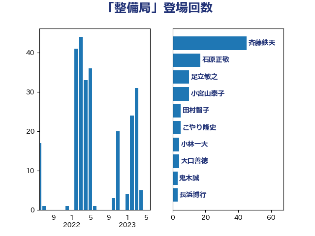

単語「整備局」

| 斉藤鉄夫 | 公明党 | 29 回 |
| 赤羽一嘉 | 公明党 | 29 回 |
| 足立敏之 | 自由民主党 | 20 回 |
| 石原正敬 | 自由民主党 | 12 回 |
| 塩川鉄也 | 日本共産党 | 9 回 |
| 大口善徳 | 公明党 | 8 回 |
| 高橋千鶴子 | 日本共産党 | 7 回 |
| 小宮山泰子 | 立憲民主党 | 6 回 |
| こやり隆史 | 自由民主党 | 5 回 |
| 伊藤孝江 | 公明党 | 5 回 |
| 田村智子 | 日本共産党 | 5 回 |
| 中根一幸 | 自由民主党 | 3 回 |
| 国定勇人 | 自由民主党 | 3 回 |
| 朝日健太郎 | 自由民主党 | 3 回 |
| 横山信一 | 公明党 | 3 回 |
| 熊谷裕人 | 立憲民主党 | 3 回 |
| 鈴木憲和 | 自由民主党 | 3 回 |
| 長浜博行 | 無所属 | 3 回 |
| 中山展宏 | 自由民主党 | 2 回 |
| 井上英孝 | 日本維新の会 | 2 回 |
| 伊藤渉 | 公明党 | 2 回 |
| 古川元久 | 国民民主党 | 2 回 |
| 塩田博昭 | 公明党 | 2 回 |
| 枝野幸男 | 立憲民主党 | 2 回 |
| 簗和生 | 自由民主党 | 2 回 |
| 菅義偉 | 自由民主党 | 2 回 |
| 西田実仁 | 公明党 | 2 回 |
| 加藤鮎子 | 自由民主党 | 1 回 |
| 吉良よし子 | 日本共産党 | 1 回 |
| 嘉田由紀子 | 無所属 | 1 回 |
| 城井崇 | 立憲民主党 | 1 回 |
| 室井邦彦 | 日本維新の会 | 1 回 |
| 斎藤嘉隆 | 立憲民主党 | 1 回 |
| 本庄知史 | 立憲民主党 | 1 回 |
| 河野太郎 | 自由民主党 | 1 回 |
| 泉田裕彦 | 自由民主党 | 1 回 |
| 浅野哲 | 国民民主党 | 1 回 |
| 渡辺周 | 立憲民主党 | 1 回 |
| 神津たけし | 立憲民主党 | 1 回 |
| 笠井亮 | 日本共産党 | 1 回 |
| 角田秀穂 | 公明党 | 1 回 |
| 野田国義 | 立憲民主党 | 1 回 |
| 青木愛 | 立憲民主党 | 1 回 |
| 高橋光男 | 公明党 | 1 回 |